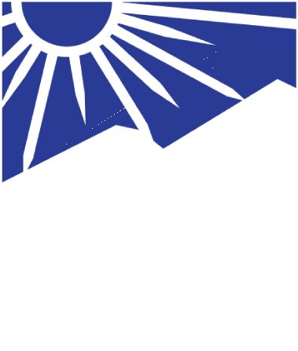

Meursault

« Aujourd'hui, j'ai tué maman. Ou peut-être était-ce hier. »
"Today, I killed mother. Or maybe it was yesterday."
Meursault (Hangul: 뫼르소, Moereuso)
Meursault foi designado como o Sinner #1 do departamento da LCB(Limbus Company Bus)
Meursault é um homem reservado e complacente. Ele deseja que a comunicação com ele seja clara. Anteriormente, ele era afiliado à N Corp. Antes de se juntar à Limbus Company, ele não havia formado uma opinião sobre os ideais da empresa.
Sobre
Deseja instruções claras e concisas, que não exijam julgamento de sua parte.